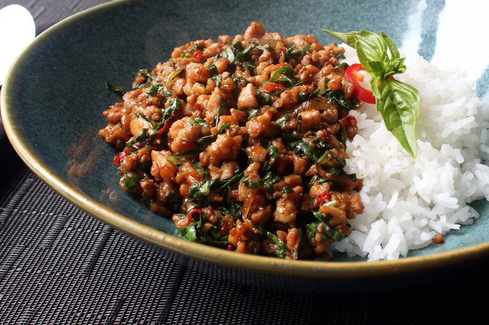

Spicy Thai Basil

Description
Thai Basil Chicken is arguably the gold standard of Thai Chicken stir fries! An incredibly fast and easy Thai recipe that truly tastes just as good as you’ll get at your favourite restaurant, served over jasmine rice.
Ingredients
- 1/3 cup chicken broth
- 1 tbsp oyster sauce
- 1 tbsp soy sauce
- 2 tsp fish sauce
- 1 tsp white sugar
- 1 tsp brown sugar
- 2 tbsp vegetable oil
- 1 pound skinless, boneless chicken thighs, coarsely chopped
- 1/4 cup sliced shallots
- 4 cloves garlic, minced
- 2 tbsp minced Thai chilies
- 1 cup thinly sliced fresh basil leaves
- 2 cups hot cooked rice
Steps
- Whisk chicken broth, oyster sauce, soy sauce, fish sauce, white sugar, and brown sugar together in a bowl until well blended.
- Heat large skillet over high heat. Drizzle in oil. Add chicken and stir fry until it loses its raw color, 2 to 3 minutes. Stir in shallots, garlic, and sliced chilies. Continue cooking on high heat until some of the juices start to caramelize in the bottom of the pan, about 2 or 3 more minutes. Add about a tablespoon of the sauce mixture to the skillet; cook and stir until sauce begins to caramelize, about 1 minute.
- Pour in the rest of the sauce. Cook and stir until sauce has deglazed the bottom of the pan. Continue to cook until sauce glazes onto the meat, 1 or 2 more minutes. Remove from heat.
- Stir in basil. Cook and stir until basil is wilted, about 20 seconds. Serve with rice.